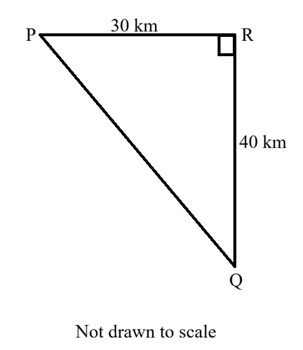
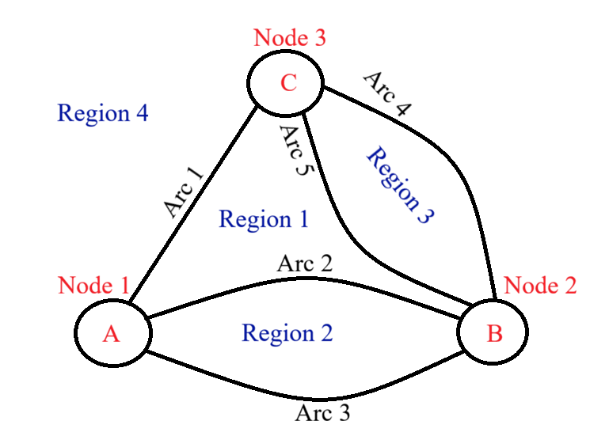
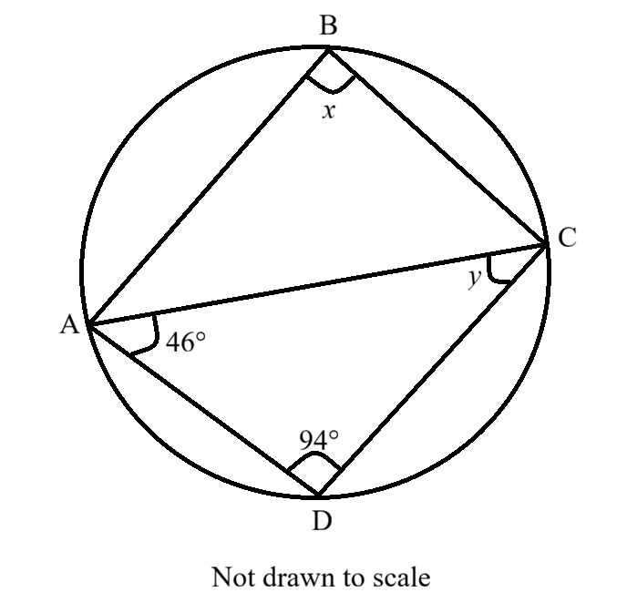
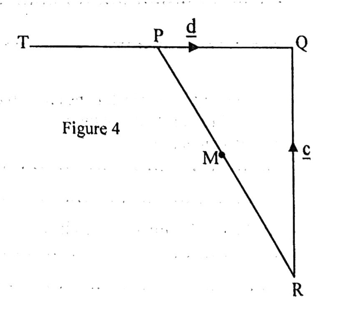
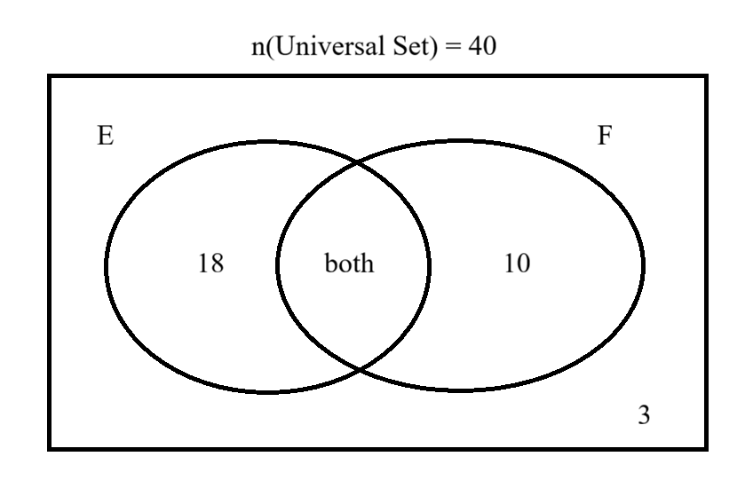
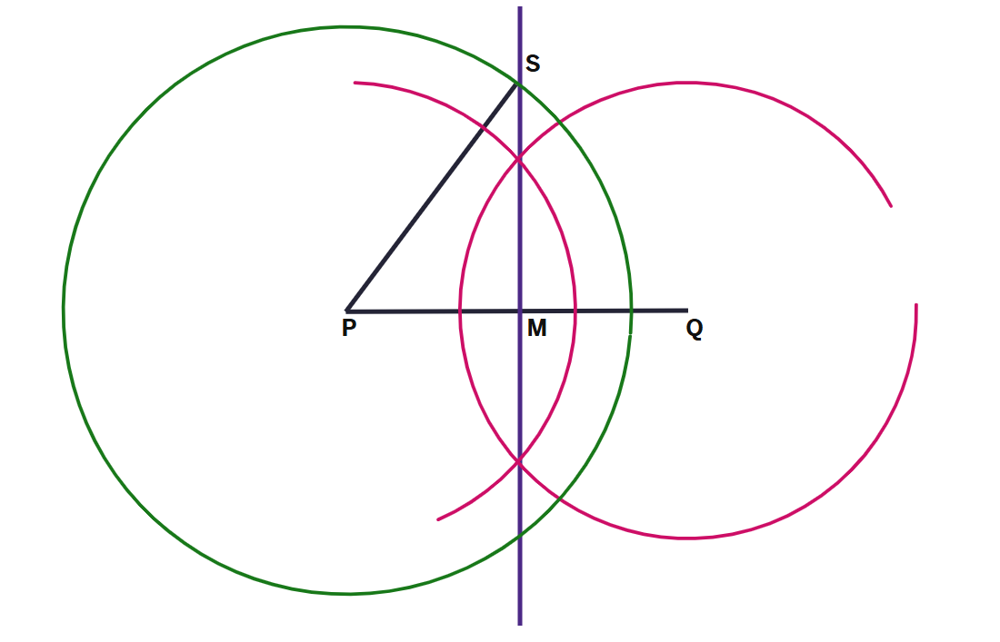
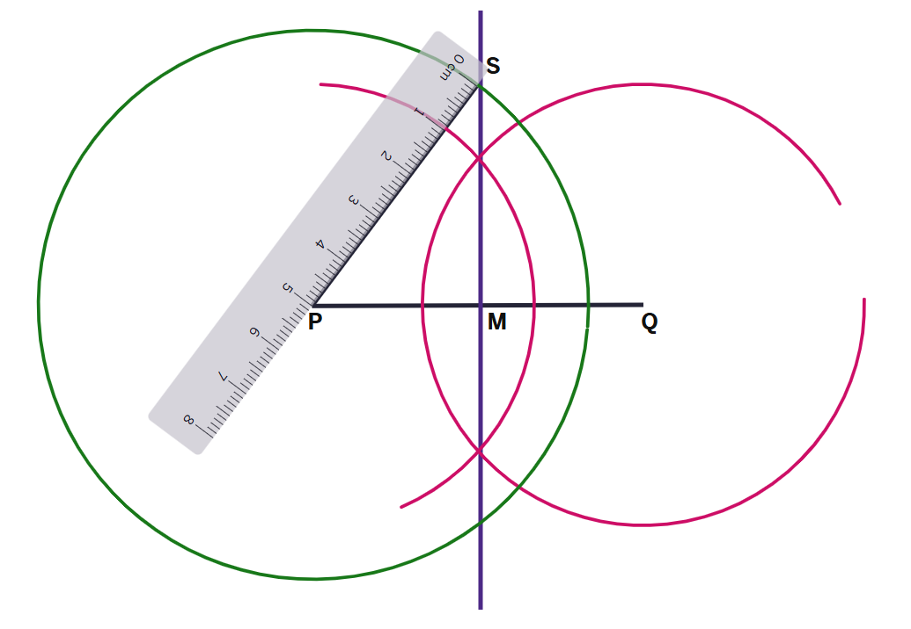

The Joy of the Teacher is the Success of the Students. – Samuel Chukwuemeka
I greet you this day,
These are the solutions to the Ordinary Level Mathematics Paper 2 questions from the General Certificate of
Education Board.
Please review the formulas, rules/laws, and theorems on the website for each topic as applicable.
If time permits and there is sufficient interest, video solutions may be provided. Please subscribe to the
YouTube channel to be notified of upcoming livestreams.
You are welcome to ask questions during the video livestreams.
If you find these resources valuable and if any of these resources were helpful in your passing the
Mathematics tests/exams, please consider making a donation:
Cash App: $ExamsSuccess or
cash.app/ExamsSuccess
PayPal: @ExamsSuccess or
PayPal.me/ExamsSuccess
Venmo: @ExamsSuccess or
Venmo.com/u/ExamsSuccess
Square: Exams Success
Buy Me a Coffee: Exams Success
Buy Me a Coffee @ Ko-Fi: Exams Success
Your donation is appreciated.
Comments, ideas, areas of improvement, questions, and constructive
criticisms are welcome.
Feel free to contact me. Please be positive in your message.
I wish you the best.
Thank you.
Duration: Two and a Half Hours
Enter the information required in the boxes above.
This paper is arranged in two sections, A and B.
Answer ALL questions in Sections A and B.
Section A: Answer All the questions in the spaces provided.
The mark allocation for each question is indicated.
Section B: All questions in section B carry equal marks.
You are reminded of the necessity for good English and orderly presentation in your answers.
In calculations, you are advised to show all the steps in your working, giving your answer at each stage.
Non-programmable calculators are allowed.
| $p$ | $q$ | $\neg p$ | $\neg q$ | $\neg p \land \neg q$ |
|---|---|---|---|---|
| $T$ | $T$ | $F$ | $F$ | $F$ |
| $T$ | $F$ | $F$ | $T$ | $F$ |
| $F$ | $T$ | $T$ | $F$ | $F$ |
| $F$ | $F$ | $T$ | $T$ | $T$ |




| Score (x) | Frequency (f) |
|---|---|
| $8 - 12$ | 6 |
| $13 - 17$ | 8 |
| $18 - 22$ | 12 |
| $23 - 27$ | 8 |
| $28 - 32$ | 6 |



| $x$ | $-2$ | $-1$ | $0$ | $1$ | $2$ | $3$ | $4$ | $5$ |
| $y = f(x)$ | $-4$ | $6$ |
| $x$ | $-2$ | $-1$ | $0$ | $1$ | $2$ | $3$ | $4$ | $5$ |
| $x^2$ | $4$ | $1$ | $0$ | $1$ | $4$ | $9$ | $16$ | $25$ |
| $-3x$ | $6$ | $3$ | $0$ | $-3$ | $-6$ | $-9$ | $-12$ | $-15$ |
| $-4$ | $-4$ | $-4$ | $-4$ | $-4$ | $-4$ | $-4$ | $-4$ | $-4$ |
| $y = f(x)$ | $6$ | $0$ | $-4$ | $-6$ | $-6$ | $-4$ | $0$ | $6$ |